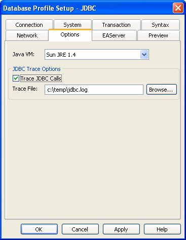

This section describes how to use the JDBC Driver Manager Trace tool.
You can use the JDBC Driver Manager Trace tool to trace a connection to any database that you access in PowerBuilder through the JDBC interface.
Unlike the Database Trace tool, the JDBC Driver Manager Trace tool cannot trace connections through one of the native database interfaces.
JDBC Driver Manager Trace logs errors and informational messages originating from the Driver object currently loaded (such as Sybase's jConnect JDBC driver) when PowerBuilder connects to a database through the JDBC interface. It writes this information to a default log file named JDBC.LOG or to a log file that you specify. The amount of trace output varies depending on the JDBC driver being used.
The information from JDBC Driver Manager Trace, like Database Trace, can help you:
Use JDBC Driver Manager Trace instead of the Database Trace tool if you want more detailed information about the JDBC driver.
 Performance considerations Turning on JDBC Driver Manager Trace can slow your performance
while working in PowerBuilder. Therefore, use JDBC Driver Manager
Trace for debugging purposes only and keep it turned off when you
are not debugging.
Performance considerations Turning on JDBC Driver Manager Trace can slow your performance
while working in PowerBuilder. Therefore, use JDBC Driver Manager
Trace for debugging purposes only and keep it turned off when you
are not debugging.
PowerBuilder writes JDBC Driver Manager Trace output to a default log file named JDBC.LOG or to a log file that you specify. The default location of JDBC.LOG is a temp directory.
By default, JDBC Driver Manager Trace is turned off in PowerBuilder. You can start it in order to trace your JDBC connection in two ways:
To start JDBC Driver Manager Trace in the PowerBuilder development environment, edit the database profile for the connection you want to trace, as described in the following procedure.
 To start JDBC Driver Manager Trace by editing
the database profile:
To start JDBC Driver Manager Trace by editing
the database profile:
Open the Database Profile Setup - JDBC dialog box for the JDB connection you want to trace.
On the Options tab, select the Trace JDBC Calls check box.
(Optional) To specify a log file where you want PowerBuilder to write the output of JDBC Driver Manager Trace, type the path name in the Trace File box, or click Browse to display the path name of an existing log file in the Trace File box.
By default, if the Trace JDBC Calls check box is selected and no alternative trace file is specified, PowerBuilder sends JDBC Driver Manager Trace output to the default JDBC.LOG file.

Click OK or Apply.
The Database Profiles dialog box displays with the name of the edited profile highlighted. PowerBuilder saves your settings in the database profile entry in the registry.
For example, here are the DBMS and DBParm string values of a database profile entry for a database named Employee. The settings that start JDBC Driver Manager Trace (corresponding to the TraceFile DBParm parameter) are emphasized.
DBMS "TRACE JDBC"
DbParm "Driver='com.sybase.jdbc.SybDriver',
URL='jdbc:sybase:Tds:199.93.178.151:
5007/tsdata',TraceFile=
'c:\temp\jdbc.log'"
Click Connect in the Database Profiles dialog box to connect to the database
or
Right-click on the connected database and select Re-connect from the drop-down menu in the Database Profiles dialog box.
PowerBuilder connects to the database, starts tracing the JDBC connection, and writes output to the log file you specified.
To start JDBC Driver Manager Trace in a PowerBuilder application, you must specify the TraceFile DBParm parameter in the appropriate script. For example, you might include it in the script that opens the application.
You can specify the TraceFile parameter in a PowerBuilder script by:
For more about using Transaction objects to communicate with a database in a PowerBuilder application, see Application Techniques .
TraceFile controls the operation of JDBC Driver Manager Trace for any JDBC-compatible driver you are using in PowerBuilder.
The easiest way to start JDBC Driver Manager Trace in a PowerBuilder application script is to copy the PowerScript TraceFile DBParm syntax from the Preview tab in the Database Profile Setup - JDBC dialog box into your script, modifying the default Transaction object name (SQLCA) if necessary.
As you complete the Database Profile Setup dialog box in the development environment, PowerBuilder generates the correct connection syntax on the Preview tab. Therefore, copying the syntax directly from the Preview tab into your script ensures that it is accurate.
 To copy TraceFile syntax from the Preview tab
into your script:
To copy TraceFile syntax from the Preview tab
into your script:
On the Options tab in the Database Profile Setup - JDBC dialog box for your connection, select the Trace JDBC Calls check box and (optionally) specify a log file in the Trace File box to start JDBC Driver Manager Trace.
For instructions, see "Starting JDBC Driver Manager Trace in the development environment".
Click Apply to save your changes to the Options tab without closing the dialog box.
Click the Preview tab.
The correct PowerScript syntax for JDBC Driver Manager Trace and other selected options displays in the Database Connection Syntax box.
The following example shows the PowerScript syntax that starts JDBC Driver Manager Trace and sends output to the file C:\TEMP\JDBC.LOG.
// Profile Employee
SQLCA.DBMS = "TRACE JDBC"
SQLCA.DBParm = "Driver='com.sybase.jdbc.SybDriver',
URL='jdbc:sybase:Tds:199.93.178.151:5007/tsdata',
TraceFile='c:\temp\jdbc.log'"
Select the DBParm line and any other syntax you want to copy to your script and click Copy.
PowerBuilder copies the selected text to the clipboard.
Paste the selected text from the Preview tab into your script, modifying the default Transaction object name (SQLCA) if necessary.
Another way to start JDBC Driver Manager Trace in a PowerBuilder application script is to include the TraceFile parameter as a value for the DBParm property of the Transaction object.
 To start JDBC Driver Manager Trace by setting
the DBParm property:
To start JDBC Driver Manager Trace by setting
the DBParm property:
In your application script, include the TraceFile parameter to start the trace and specify a nondefault trace file.
For example, this statement starts JDBC Driver Manager Trace in your application and sends output to a file named MYTRACE.LOG. (This example assumes you are using the default Transaction object SQLCA, but you can also define your own Transaction object.)
SQLCA.DBParm = "Driver='com.sybase.jdbc.SybDriver',
URL='jdbc:sybase:Tds:199.93.178.151:5007/tsdata',
TraceFile='c:\MYTRACE.LOG'"
As an alternative to setting the DBParm property in your PowerBuilder application script, you can use the PowerScript ProfileString function to read DBParm values from a specified section of an external text file, such as an application-specific initialization file.
This assumes that the DBParm value read from your initialization file includes the TraceFile parameter to start JDBC Driver Manager Trace, as shown in the preceding example.
 To start JDBC Driver Manager Trace by reading
DBParm values from an external text file:
To start JDBC Driver Manager Trace by reading
DBParm values from an external text file:
Use the following PowerScript syntax to specify the ProfileString function with the DBParm property:
SQLCA.dbParm = ProfileString(file, section, variable,
default_value)
For example, the following statement in a PowerBuilder script reads the DBParm values from the [Database] section of the APP.INI file:
SQLCA.dbParm =
ProfileString("APP.INI","Database","DBParm","")Once you start tracing a JDBC connection with JDBC Driver Manager Trace, PowerBuilder continues sending trace output to the log file until you stop tracing.
 To stop JDBC Driver Manager Trace by editing a
database profile:
To stop JDBC Driver Manager Trace by editing a
database profile:
Open the Database Profile Setup - JDBC dialog box for the connection you are tracing.
For instructions, see "Starting JDBC Driver Manager Trace in the development environment".
On the Options tab, clear the Trace JDBC Calls check box.
If you supplied the path name of a log file in the Trace File box, you can leave it specified in case you want to restart tracing later.
Click OK in the Database Profile Setup - JDBC dialog box.
The Database Profiles dialog box displays, with the name of the edited profile highlighted.
Click Connect in the Database Profiles dialog box
or
Right click on the connected database and select Re-connect from the drop-down menu in the Database Profiles dialog box.
PowerBuilder connects to the database and stops tracing the connection.
To stop JDBC Driver Manager Trace in a PowerBuilder application script, you must delete the TraceFile parameter. You can do this by:
One way to change the TraceFile parameter in a PowerBuilder script is to edit the DBParm property of the Transaction object.
 To stop JDBC Driver Manager Trace by editing the
DBParm property:
To stop JDBC Driver Manager Trace by editing the
DBParm property:
In your application script, edit the DBParm property of the Transaction object to delete the TraceFile parameter.
For example, the following statement starts JDBC Driver Manager Trace in your application and sends the output to a file named MYTRACE.LOG. (This example assumes you are using the default Transaction object SQLCA, but you can also define your own Transaction object.)
SQLCA.DBParm = "Driver='com.sybase.jdbc.SybDriver',
URL='jdbc:sybase:Tds:199.93.178.151:5007/tsdata',
TraceFile='c:\MYTRACE.LOG'"
Here is how the same statement should look after you edit it to stop JDBC Driver Manager Trace.
SQLCA.DBParm = "Driver='com.sybase.jdbc.SybDriver',
URL='jdbc:sybase:Tds:199.93.178.151:5007/tsdata'"
As an alternative to editing the DBParm property in your PowerBuilder application script, you can use the PowerScript ProfileString function to read DBParm values from a specified section of an external text file, such as an application-specific initialization file, or you can use RegistryGet to obtain values from a registry key.
This assumes that the DBParm is no longer read from your initialization file or registry key, as shown in the preceding example. You must disconnect and reconnect for this to take effect.
You can display the contents of the JDBC Driver Manager Trace log file anytime during a PowerBuilder session.
 Location of JDBC.LOG For information about where to find the default JDBC.LOG file,
see "About JDBC Driver Manager
Trace".
Location of JDBC.LOG For information about where to find the default JDBC.LOG file,
see "About JDBC Driver Manager
Trace".
 To view the contents of the log file:
To view the contents of the log file:
Open JDBC.LOG or the log file you specified in one of the following ways:
 Leaving the log file open If you leave the log file open as you work in PowerBuilder,
JDBC Driver Manager Trace does not update the log.
Leaving the log file open If you leave the log file open as you work in PowerBuilder,
JDBC Driver Manager Trace does not update the log.
This part describes how to make database connections for transactional components.